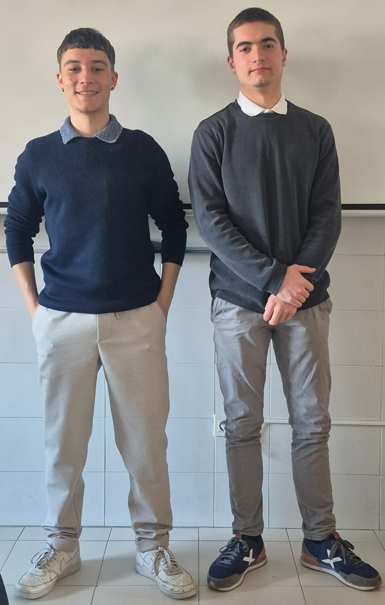
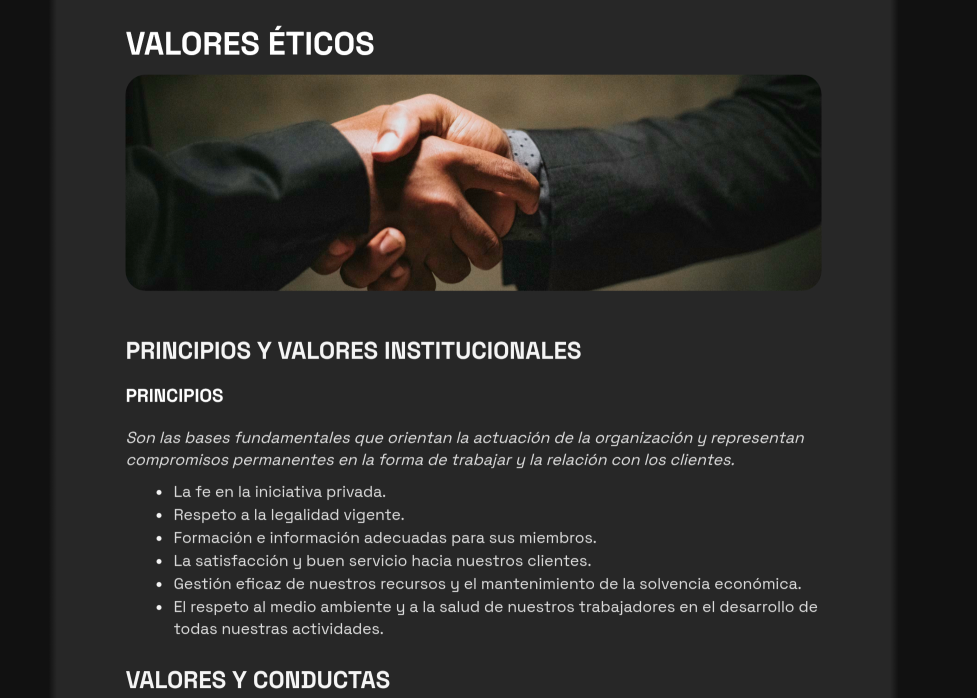
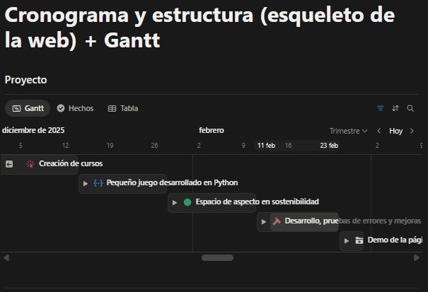
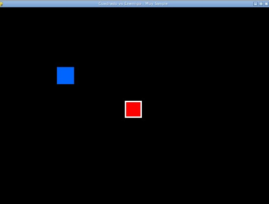
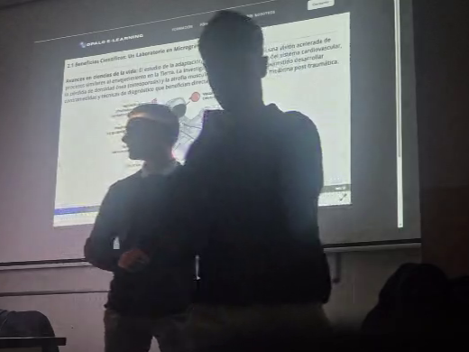

Sobre nosotros
Nuestra misión: ofrecer los mejores servicios de formación en Internet.
Este proyecto nació con la necesidad de construir un mundo en donde el conocimiento no solo esté disponible, sino también accesible para la comprensión del gran público.
Fundada en 2025 por Iván Gimeno e Izan Gregorio nos presentamos como una startup de formación en tecnologías y temáticas pintorescas en plena etapa de expansión.

Artículo: Valores éticos

Historia
9 dic
- Desarrollo del cronograma en forma de diagrama de Gantt en Notion.
- Realización del esqueleto de la web.
Cronograma

13 ene
- Desarrollo de cursos en formato H5P.
- Los cursos tratan sobre: viajes espaciales, cuántica, biotecnologia, ciudades ecológicas, manipulación climática y premoniciones.
- Todos ellos cuentan con una introducción que detalla los puntos clave del curso y al público al que se dirige.
Cursos

27 ene
- El juego consiste en que nuestro personaje (cuadrado rojo) escape del enemigo (cuadrado azul) para no perder.
- Está desarrollado mediante el lenguaje de programación Python añadiendo la biblioteca para juegos Pygame.
- La integración en la web se hace con un iframe de la herramienta de Pickcode.
Python

10 feb
- Desde el equipo de Opalo E-Learning hemos desarrollado un manifiesto sobre los principios, valores y conductas que nos representan como la organización empresarial y ética que somos.
- Así mismo, destacamos la importancia y el trabajo que le dedicamos a la sostenibilidad, el medioambiente y el cumplimiento de los Objetivos de Desarrollo Sostenible.
Sostenibilidad
23 feb
- Por último, comprobación de errores detectados y modificaciones necesarias tras los comentarios recibidos tanto; por parte, del tutor responsable del trabajo; como parte de los compañeros.
- Desde el punto de vista técnico, nuestro objetivo era optimizar el código y los contenidos para evitar "engordar" de forma innecesaria el proyecto.
Mejoras

24 feb
- Creación de los preparativos para la "demo" o muestra del proyecto.
- Desarrollo de; el documento necesario para realizar la explicación y sentido del proyecto ante el jurado, y escritura de la memoria que se trata de un compendío de los trabajos preparativos anteriores basada en el índice previamente acordado.
- La presentación en cuestión se realiza en la sala de actos del centro ante el jurado que decidirá, en última instancia; el ganador.